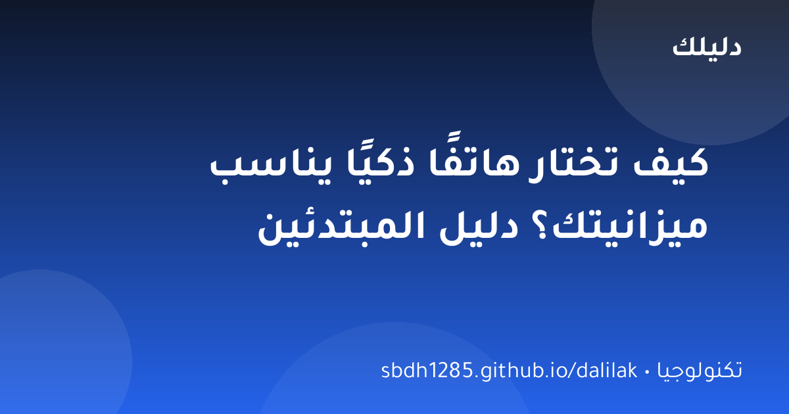
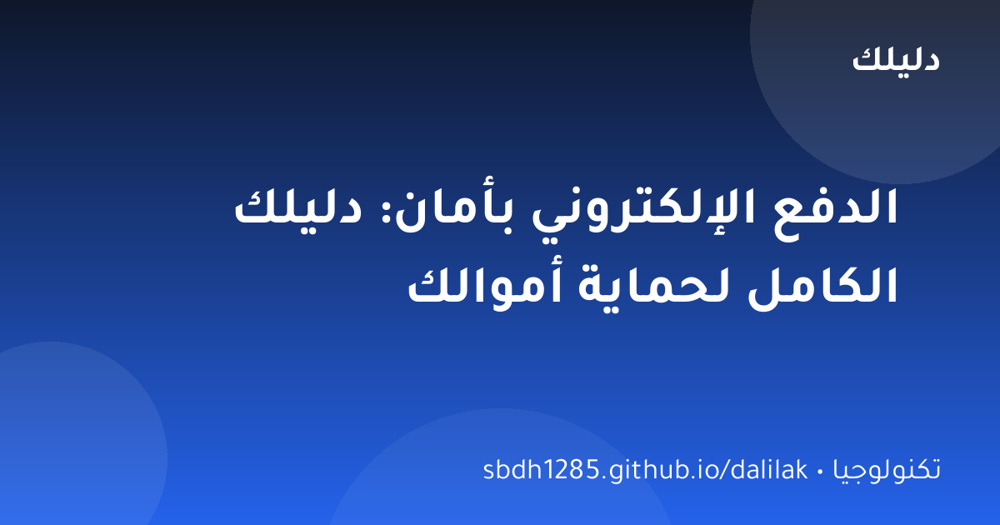
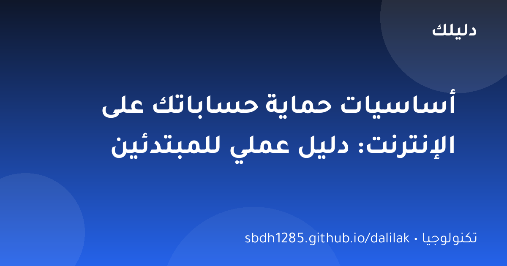

📱 تكنولوجيا
كيف تختار هاتفًا ذكيًا يناسب ميزانيتك؟ دليل المبتدئين
دليل عملي لاختيار الهاتف الذكي دون حيرة: المعالج، الذاكرة، الكاميرا، البطارية — وما الذي يستحق أن تدفع مقابله فعلًا.

الدفع الإلكتروني لم يعد رفاهية؛ إنه الطريقة التي ندفع بها فواتيرنا، نشتري بها احتياجاتنا، ونستقبل بها رواتبنا في كثير من الأحيان. ومع هذا التحول، تتطور أساليب المحتالين بسرعة. الخبر الجيد: 90% من عمليات الاحتيال تنجح بسبب أخطاء بسيطة يمكنك تفاديها بالوعي.
لا أحد — لا البنك ولا الشرطة ولا شركة الاتصالات — يطلب رقم بطاقتك الكامل أو رمز التحقق (CVV) عبر الهاتف أو الرسائل. أي جهة تطلب ذلك هي محتال. البنك الحقيقي لا يطلب «تأكيد بياناتك» عبر رابط في رسالة؛ إذا شككت، اتصل بالبنك من الرقم الرسمي على ظهر البطاقة.
كثير من البنوك تتيح إنشاء بطاقة افتراضية برقم مؤقت ومبلغ محدد للدفع عبر الإنترنت. استخدمها دائمًا للمتاجر غير المعروفة — حتى لو سُرق الرقم، لن يستطيع المحتال سحب أكثر من المبلغ المحدد.
فعّل التحقق بخطوتين على تطبيقات الدفع والمحافظ (Apple Pay، Google Pay، ومدى باي وغيرها). هذه الطبقة الإضافية تجعل سرقة حسابك شبه مستحيلة حتى لو حصل المحتال على كلمة مرورك.
فعّل إشعارات الرسائل النصية أو التطبيق لكل عملية دفع. الاكتشاف المبكر لأي عملية غير معروفة يعني إيقافها سريعًا قبل الضرر.
الدفع الإلكتروني آمن إذا التزمت بالقواعد الذهبية: لا تشارك بيانات البطاقة، تحقق من الموقع قبل الدفع، استخدم البطاقات الافتراضية، وفعّل الإشعارات. التقنية وفرت علينا عناء حمل النقود، والوعي هو ما يحمي هذا التوفير.
احذر المتاجر بلا بيانات واضحة أو برسائل تهديد بالعجلة. تحقّق من القفل والمجال قبل إدخال البطاقة، وفعّل إشعارات البنك. بطاقة افتراضية أو مؤقتة تحمي بياناتك الأصلية. لا تدفع عبر روابط واردة في رسائل مشبوهة.
رُوجعت المعلومات العامة في هذا المقال بالاستناد إلى المصادر التالية. الروابط الخارجية قد تُحدّث محتواها بمرور الوقت.

دليل عملي لاختيار الهاتف الذكي دون حيرة: المعالج، الذاكرة، الكاميرا، البطارية — وما الذي يستحق أن تدفع مقابله فعلًا.

حماية حساباتك أسهل مما تظن: كلمات مرور قوية، التحقق بخطوتين، والتعرف على الاحتيال — دليل عملي بأمثلة واضحة.

الذكاء الاصطناعي في كل مكان حولك: شرح مبسط بالعربية لما هو الذكاء الاصطناعي، كيف يتعلم، وأمثلة من حياتك اليومية.